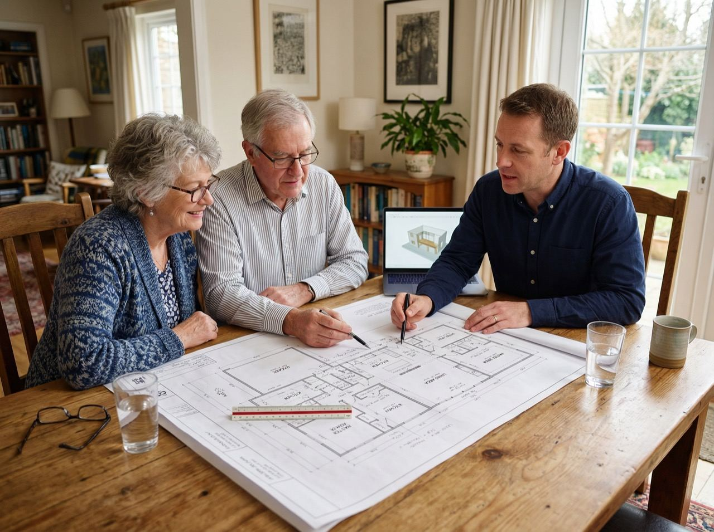

Serving Toronto homeowners 55+
Reverse mortgages for Toronto homeowners
Quick answer: A Toronto reverse mortgage lets homeowners 55+ turn part of their home's value into tax free cash with no regular mortgage payments, while staying on title. As a BRX agent I can compare offers from more than one lender, so you see options side by side, then decide with your family and an independent lawyer.
Toronto's real estate has made a lot of longtime homeowners house rich and cash tight, plenty of equity, not much monthly cash flow. If that sounds like you, a reverse mortgage might be worth an honest look.

Local knowledge
Toronto's neighbourhoods, and what they mean for a reverse mortgage
Toronto is really the former cities of Toronto, North York, Scarborough, Etobicoke, York and East York stitched together, and it isn't one housing market but many. I've worked with homeowners across the city, and each area brings its own character to the appraisal and lending process.
Old Toronto and the core
From condos along the transit corridors to character homes in Riverdale, The Beach and High Park. Condo reserve funds and heritage designations both get extra attention during underwriting.
North York
Family sized homes and bungalows in Willowdale, Don Mills and beyond, many owned for decades, often with substantial built up equity.
Scarborough
Bungalows and detached homes from Agincourt outward, across a wide range of values, with strong, settled homeowner communities.
Etobicoke
Everything from The Kingsway to postwar bungalows in the inner suburbs and waterfront homes in Mimico, which can carry unique appraisal considerations.
East York and Leaside
Character homes in Leaside and well kept bungalows on smaller, established lots, long held by the same families.
York
Dense, leafy family neighbourhoods with strong, steady resale demand.
Toronto specifics
House rich and cash tight, condos, and heritage homes
Many Toronto homeowners 55+ have lived for decades in bungalows and detached homes across the inner suburbs, while downtown and the transit corridors hold a lot of condos. High property values can mean substantial equity, and also higher property taxes, which is how so many longtime owners end up house rich and cash tight. A reverse mortgage is one way to turn some of that built up value into tax free cash while you stay in the home. If you want the full picture of how it works, start with my Ontario reverse mortgage guide, or weigh it against a line of credit in reverse mortgage versus HELOC in Ontario.
Toronto also has a high share of condo ownership and heritage designated homes, both of which add a step to the process. Condo lenders review the building's reserve fund and any resale restrictions; heritage designation gets factored into the appraisal. Neither one rules out a reverse mortgage, but both deserve attention up front rather than a surprise partway through.
I work with lenders experienced in Toronto's market conditions, so these details get handled early, not discovered late. You can also try my reverse mortgage calculator for an illustrative range, which is an estimate only, not a quote.
Looking for your part of the city? See my local pages for North York, Scarborough, Etobicoke and Vaughan, Richmond Hill & Markham.
A separate city program worth knowing
City of Toronto property tax relief for eligible seniors
Separate from anything to do with a reverse mortgage, the City of Toronto offers property tax relief for eligible seniors, including a Property Tax Increase Cancellation and a Property Tax Increase Deferral, along with related water and solid waste relief. These are city programs with their own eligibility rules. They are not administered by Blue Key, and a reverse mortgage is not a government program or benefit.
Based on the city's 2026 materials, checked on November 16, 2026, the general picture is:
- Income. Combined household income must not exceed $62,000 for 2026.
- Increase Cancellation. Also requires a residential assessment below $975,000, and generally that you are 65 or older, or age 60 to 64 and receiving the Guaranteed Income Supplement (or, if widowed, the Spouse's Allowance under the Old Age Security Act).
- Increase Deferral. Income cap of $62,000, and generally that you are 65 or older, or 60 to 64 with GIS or the OAS allowance, or 50 or older and receiving a pension or pension annuity under the Income Tax Act.
- Ownership and account standing. You must have owned and occupied the home as your principal residence for one year or more before October 31, 2026, with no prior year property tax arrears and your water and utility account paid in full. You must reapply each year.
Please note the timing. The deadline to apply for the 2026 tax year was November 2, 2026, so that date has already passed. These programs usually run each year with updated income limits and rules, so the best move now is to check the city's page for the next year's dates and details. Full details and the application are on the City of Toronto property tax and utility relief page.
I would not promise that a reverse mortgage and these city programs can be combined. They are separate, the city sets the eligibility, and the sensible path is to confirm the current rules with the City of Toronto and mention both to an independent legal advisor before you decide anything.
Toronto questions
Questions Toronto homeowners ask most
Does a reverse mortgage affect Toronto's property tax deferral program?
The two are separate. A reverse mortgage is a private loan, while the city's tax relief programs are administered by the City of Toronto with their own eligibility rules. I would not promise they can be combined. Check current details with the city and mention both to your independent legal advisor before deciding.
Can Toronto condo owners get a reverse mortgage?
Often yes, though condos involve extra review, such as the building's reserve fund and any rules that affect resale. Lenders assess each condo individually, so I look into your specific building before we go further.
What about a heritage designated home in Toronto?
A heritage designation does not prevent a reverse mortgage, but it can affect the appraisal and how a lender views future resale, so it's factored into underwriting on a case by case basis.
How much of my Toronto home's equity can I access?
It depends on your age, your home's appraised value, and current lender terms, so I won't estimate a number without those details. What I can tell you is the general range and walk you through real figures for your specific home during a free consultation. See how reverse mortgages work for the general picture, or take the self assessment to see if it's worth exploring.
Can you compare reverse mortgage lenders for my Toronto home?
Yes. As a mortgage agent with BRX Mortgage Inc., I can compare offers from more than one reverse mortgage lender, so you can weigh rates, fees and features side by side before choosing.
Do you meet Toronto clients at home?
Yes. I can meet you at home anywhere in Toronto, or by phone or video, and adult children are always welcome to join.
Can Toronto seniors still apply for the 2026 property tax relief programs?
The City of Toronto deadline to apply for the 2026 tax year was November 2, 2026, so that date has already passed. These city programs usually run each year with updated income limits and rules, so check the City of Toronto page for the next year's dates. They are city programs, separate from a reverse mortgage and not administered by Blue Key, and a reverse mortgage is not a government program. Confirm current rules with the city, and mention both to an independent legal advisor before deciding.
Let's talk about your Toronto home
A free, no obligation conversation, with someone who knows the neighbourhood you're in.